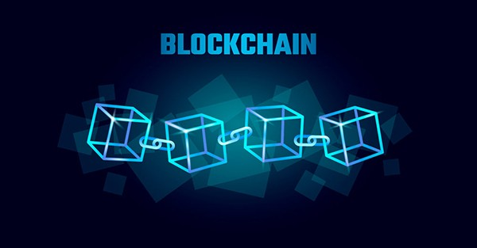

Introduction to Blockchain Technology
Blockchain technology is like a digital ledger where transactions or data are recorded in a secure and transparent manner. Imagine it as a chain of blocks where each block contains information, and once added, it becomes a permanent part of the chain.
Example:
Think about a society without banks or land registries. People rely on paper records and middlemen to verify transactions and ownership. This system is prone to errors, fraud, and lost documents.
Now, imagine a digital record book called a blockchain. It's like a giant Google Sheet accessible to everyone, but with special features:
- Decentralized:
There's no single owner or manager. Copies of the record book are stored on multiple computers around the world.
- Transparent:
Everyone can see the information in the record book, but they can't change it.
- Secure:
Every entry is linked together like a chain, with a unique code for each entry. If someone tries to tamper with the record, everyone will know immediately.
History and Evolution of Blockchain
Blockchain was first introduced in 2008 by an anonymous person or group called Satoshi Nakamoto, as the technology behind Bitcoin. Since then, it has evolved rapidly, finding applications beyond cryptocurrencies.
Key Concepts
-
Decentralization:
Instead of a single central authority controlling the data, blockchain distributes it across a network of computers, making it more secure and transparent.
-
Consensus Mechanisms:
These are rules that ensure all participants in the network agree on the validity of transactions. For example, Proof of Work (used by Bitcoin) and Proof of Stake (used by Ethereum).
-
Cryptographic Hashing:
It's a process where data is converted into a fixed-size string of characters, ensuring the integrity of information stored in blocks.
Use Cases and Applications of Blockchain
-
Cryptocurrencies and Digital Assets:
Bitcoin, Ethereum, and other cryptocurrencies are examples of digital assets built on blockchain technology.
-
Smart Contracts and Decentralized Applications (DApps):
These are self-executing contracts with the terms of the agreement directly written into code. DApps are applications that run on a blockchain network, such as decentralized finance (DeFi) apps.
-
Supply Chain Management:
Blockchain can track the journey of products from manufacturer to consumer, ensuring transparency and authenticity. For example, Walmart and IBM are using blockchain to trace the origin of food products.
-
Healthcare:
Blockchain can securely store and share patient records, ensuring data integrity and privacy.
-
Finance:
Blockchain can streamline processes like cross-border payments, clearing, and settlement, reducing costs and transaction times.
In essence, blockchain technology holds immense potential to revolutionize various industries by providing transparency, security, and efficiency in transactions and data management.